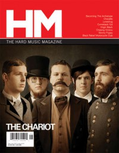
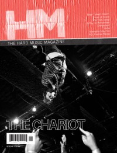

CMnexus
: Contemporary Christian culture, music, and media.
|
|
The ChariotOn the cover|  | May 2007
HM |
 | January 2011
HM | Media coverage:- Nov 2004 in HM "The Chariot", by David Stagg
- May 2007 in HM "Tearing Off The Tags", by Bradley Hathaway
- May 2007 in CCM "What Now!: Organized Beyond Recognition", by Doug Van Pelt
- Jun 2007 in CCM "New Noise: The Chariot", by Andrew Schwab
- May 2009 in HM "The Chariot", by Levi McAllister
- Mar 2010 in HM "Live Report: The Chariot's Tours and Rumors of Tours", by Corey Erb
- Jan 2011 in HM "Poster: The Chariot"
- Jan 2011 in HM "Interview In The Mirror: The Chariot On The Chariot", by Josh Scogin
- Jan 2011 in CCM Digital "What's New: The Chariot"
- Sep 2012 in HM "The Chariot", by Tony D. Bryant
- Jan 2013 in HM "Live Report: Unsilent Night, December 1", by Rob Shameless
- Jul 2013 in HM "The Jump: The Warped Tour Isn't Dead"
- Dec 2013 in HM "The Jump: HM Live: A Solemn Goodbye to The Chariot", by David Stagg
Albums & reviews:2004: Everything Is Alive, Everything Is Breathing, Nothing Is Dead, and Nothing Is Bleeding2005: Unsung EP2007: The Fiancee2007: One More Song [DVD]2009: Wars And Rumors Of Wars2010: Long Live2012: One Wing Award Summary (Nominations / Wins)Dove Awards |
|